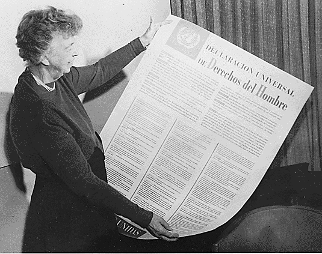

Europa contemporană (unitate, diversitate, integrare)
De ce studiem tema Europei contemporane - unitate, diversitate, integrare?
Este important de înțeles aspectul potrivit căruia redesenarea hărților geografice și retrasarea granițelor dintre state după cele două Războaie Mondiale s-a petrecut conform intereselor marilor puteri, neluând în considerare diferitele aspecte demografice sau culturale. Astfel, Europa s-a văzut pusă în fața unor dileme cărora de cele mai multe ori doar la nivel teoretic îi poate oferi soluții - protejarea identității și valorilor etnice, naționale și religioase ale diverselor comunități fără a face abuzuri sau discriminări în detrimentul niciuneia dintre entitățile componente.
Europa contemporană este mult diferită de Europa medievală sau interbelică, nu numai din punctul de vedere al redesenării hărții geografice a țărilor și al retrasării granițelor acestora, cât mai ales în ce privește evoluția sa la nivelul drepturilor omului și ale cetățeanului. Multiculturalismul este un aspect dezvoltat cu predilecție în Europa Occidentală a ultimelor decenii, protejarea identității și valorilor etnice, naționale și religioase ale diverselor comunități reprezentând un punct important al politicii contemporane. Deviza Uniunii Europene este în acest context sintagma „unitate în diversitate”.
Europa și drepturile omului
Ideea necesității respectării drepturilor omului își are punctul de plecare în secolul al XVIII-lea, în perioada iluministă. În timpul Revoluției franceze a apărut „Declarația drepturilor omului și ale cetățeanului”, punându-se bazele democrației în Franța și în celelalte țări. Acest avânt însă a fost oprit în evoluția sa de regimurile totalitare, dictatoriale și autoritare care au pus stăpânire pe Europa secolului al XX-lea.
Dezbaterile asupra drepturilor omului au luat amploare în contextul în care în numele suveranității statelor s-au produs asupra individului atrocități greu de imaginat. Astfel, s-a ajuns la concluzia că ideea drepturilor omului este mai veche decât noțiunea de drepturi ale statului. Închistarea puterilor în propria suveranitate a dus la o transformare a diversității Europei într-o reală divizare a acesteia. În acest context Uniunea Europeană este privită ca salvatoare și recuperatoare a acestei diversități, de o valoare incontestabilă pentru patrimoniul european și nu numai.
Pionul central al acestui fenomen este cetățeanul, care trebuie protejat, căruia trebuie să i se asigure anumite drepturi și care nu trebuie strivit sub greutatea instituțională. Astfel statul trebuie să accepte delegarea unor atribute ale suveranității sale iar centralizarea să fie realizată decizional în scopul apropierii de cetățean, nu în distanțarea față de el.

Eleaonor Roosevelt ținând ”Declarația universală a drepturilor omului” în spaniolă
{kind=link}
Spațiul european se înscrie și el în această tendință a impunerii și respectării drepturilor omului supravegheată de ONU. Astfel, între anii 1948-1950 este elaborată Convenția europeană pentru apărarea drepturilor omului și a libertăților fundamentale, care a intrat în vigoare la 2 septembrie 1953.
Hotărârile au fost luate „Considerând Declaraţia Universală a Drepturilor Omului, proclamată de Adunarea generală a Naţiunilor Unite la 10 decembrie 1948; Considerând că scopul acestei declaraţii este recunoaşterea şi aplicarea universală şi efectivă a drepturilor pe care ea le enunţă; Considerând că scopul Consiliului Europei este realizarea unei uniuni mai strânse între membrii săi şi că unul dintre mijloacele pentru a atinge acest scop este apărarea şi dezvoltarea drepturilor omului şi a libertăţilor fundamentale; Reafirmând ataşamentul lor profund faţă de aceste libertăţi fundamentale care constituie temelia însăşi a justiţiei şi a păcii în lume şi a căror menţinere se bazează în mod esenţial, pe de o parte, pe un regim politic cu adevărat democratic, iar pe de altă parte, pe o concepţie comună şi un respect comun drepturilor omului din care acestea decurg; Hotărâte, în calitatea lor de guverne ale statelor europene animate de acelaşi spirit şi având un patrimoniu comun de idealuri şi de tradiţii politice, de respect al libertăţii şi de preeminenţă a dreptului, să ia primele măsuri pentru garantarea colectivă a anumitor drepturi enunţate în Declaraţia Universală” (Fragmente din Convenția europeană pentru apărarea drepturilor omului și a libertăților fundamentale). Principalele drepturi și libertăți promulgate sunt:
- dreptul la viață;
- interzicerea torturii, a scalviei și a muncii forțate;
- dreptul la libertate și la siguranță;
- dreptul la respectarea vieții private și de familie;
- libertatea de gândire, de conștiință și de religie;
- libertatea de întrunire și de asociere;
- interzicerea discriminării etc.
Au fost create totodată și instituții care aveau menirea să controleze respectarea acestor drepturi ale omului reglementate prin convenția menționată. Exemple ale unor astfel de instituții sunt: Comisia Europeană a Drepturilor Omului (1954) sau Curtea Europeană a Drepturilor Omului – CEDO (1959).
Noutatea apariției și funcționării acestor instituții este posibilitatea oricărei persoane de a sesiza în mod direct Comisia și Curtea europeană a Drepturilor Omului în cazul în care un cetățean consideră că statul căruia îi aparține ar fi comis o încălcare a drepturilor omului în ceea ce-l privește – se aduce astfel o atingere importantă principiului suveranității statului în exercitarea actului judiciar. Curtea europeană a Drepturilor Omului are sediul la Strasbourg. Ea este o jurisdicţie internaţională, fiind alcătuită dintr-un număr de judecători egal cu cel al statelor membre ale Consiliului Europei care au ratificat Convenţia pentru Apărarea Drepturilor Omului şi a Libertăţilor Fundamentale.
Judecătorii CEDO, în prezent în număr de 47, îşi exercită mandatul cu titlu individual şi nu îşi reprezintă statul.
Această perspectivă europeană de abordare a drepturilor omului a fost preluată ca model și în alte zone ale lumii, exemplificând prin Convenția americană a drepturilor omului (1969), Carta africană a drepturilor omului și ale popoarelor (1981) sau Carta arabă a drepturilor omului (1994).